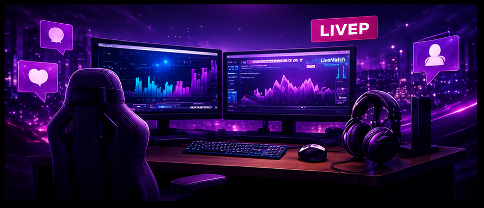
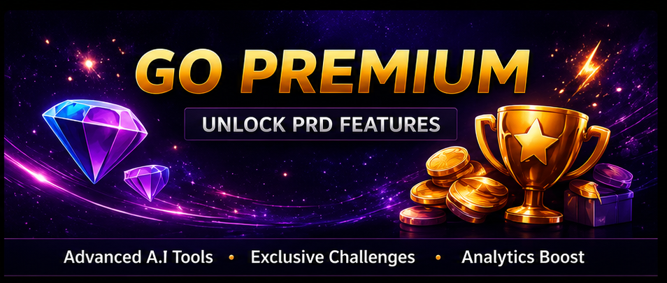
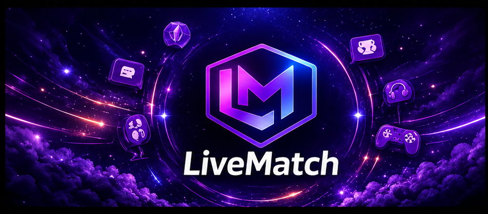

Problema recorrente
Streamers e agências tomam decisões de conteúdo e monetização com informação dispersa e pouca previsibilidade.
O LiveMatch transforma dados fragmentados de transmissões ao vivo em crescimento mensurável para criadores e agências.
Rodada em preparação • Manifestação de interesse não vinculante

Criadores operam em múltiplas plataformas, mas métricas, decisões e oportunidades continuam desconectadas.
Streamers e agências tomam decisões de conteúdo e monetização com informação dispersa e pouca previsibilidade.
Uma camada SaaS centraliza analytics, metas, relatórios e recomendações de IA em uma única experiência.
Modelo freemium com planos Premium para criadores e planos de gestão para agências.
Arquitetura multicanal e experiência traduzível permitem atender criadores em diferentes mercados.
Informação útil no momento certo — antes, durante e depois de cada transmissão.
Acompanhe audiência, curtidas, presentes e engajamento enquanto a live acontece.
Receba sugestões práticas para melhorar retenção e interação durante a transmissão.
O público está respondendo bem.
Experimente uma chamada para ação agora.
Histórico, metas, ranking de fãs e relatórios reunidos em um único lugar.
Do primeiro espectador ao fã mais engajado, o LiveMatch organiza seus dados e destaca o que merece sua atenção.

Estamos formando uma rede global de investidores que entendem tecnologia, creator economy e produtos SaaS.
A lista final será definida por advogado societário e pela plataforma regulada, conforme o país e o tipo de instrumento.
Orçamento indicativo sujeito à governança da rodada, contratos, impostos e evolução operacional.
Uma demonstração direta de como a plataforma acompanha e analisa uma transmissão.

Conheça o produto, a estratégia e os próximos marcos do LiveMatch em uma conversa direta.
Agendar uma conversa ↗